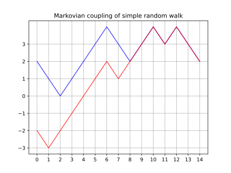

Motivation: Learning on graphs
Why graphs
(labeled) Graphs are everywhere
- Chips (directed, labeled, multigraphs)
- Molecular structures
- Social networks
They can have discrete or continuous features
Goals
- Compute statistics on graph datasets;
- Make NNs that output graphs
Typical Problem
\[\text{Loss}(G) = ???\]
\[\text{Loss}(G) = d_{\text{graphs}}(G, G_{\text{target}})\]
\[d_{\text{graphs}} = ???\]
And we want this loss to be differentiable wrt. the graph structure — for gradient descent.
Challenges
- Independent of data representation / node ordering

No Polynomial algorithm for graph isomorphism
Graphs are combinatorial objects (how do we differentiate on the space of graphs?)
Related work
- Weisfeiler-Lehman (WL) Distance (Chen et al. 2022)

- Optimal Transition Coupling (OTC) Distance (O’Connor et al. 2021)
- Fused Gromov-Wasserstein (FGW) Distance (Vayer et al. 2019)

Our approach
Compute distances on Markov Chains
\[\text{(labeled) Graph } \simeq \text{ (labeled) Markov Chain}\]
- Random walk gives a Continuous representation of the combinatiorial object
- Naturally adapted to directed graphs
- Opens applications to other Markov chains.
Optimal Transport
- Beetwen distributions
- With a cost C between state spaces
\[d_W (\mu, \nu) = \inf_{(X, Y) \text{ coupling of } (\mu, \nu)} \E C(X, Y)\]
Markovian couplings
- \((X, Y)\) a coupling between \((\mu, \nu)\)
- \((X_i, Y_i)_{i\in\N}\) a coupling between \((\mathcal{X}, \mathcal{Y})\) markov chains 
Formalization
- Optimal Transport Markov (OTM) distance between
\((\mathcal{X}, \mathcal{Y})\) markov
chains given
- \(p\) distribution over \(\N\)
- \(C\) cost function between state spaces
\[d_{\mathrm{OTM}}^p(\mathcal{X}, \mathcal{Y}; C) = \inf_{(X_t, Y_t)_{t\in\N}}\E\, C(X_T,Y_T)\]
Interpretation
- Optimal transport on markov couplings
- Carefully couple the two markov chains
- Look at the expected cost at all steps
- Take the expectation over time (for a certain distribution on time)
- “Propagate” labels from neighbors to neighbors
- Determine “how different” the label distributions are at each step
Contributions I: OTM
Can work with non-stationary Markov chains (adds stability over previous Markov-based methods)
Theoretical framework
- WL distance: \(p\) is the Dirac Delta in \(k\).
- OTC distance: is the tight upper bound for OTM distances
- \(\delta\)-Discounted WL distance p is geometric distribution with parameter \(\delta\)
Contributions II: The \(\delta\)-discounted WL distance

OTM for geometric distributions
entropy-regularized version is Differentiable (In the label values and the markov chain structure)
Computationally tractable and stable (iterative algorithm)
Experiments
Synthetic data: noisy circle barycenter
Compute by gradient descent: \[\text{Barycenter}(G_1, G_2, \dots, G_n) = \inf_{G} \sum d(G, G_i)^2\]


Example output of the barycenter experiment on circle graphs with Erdős–Rényi noise
Graph classification
| dataset | PROTEINS | PTC_MR | PROTEINS_full | ENZYMES |
|---|---|---|---|---|
| classes | 2 | 2 | 2 | 6 |
| attributes | discrete label | discrete label | 29 | 18 |
| FGW 1-NN | \(\mathbf{65.1\% \pm 4.6\%}\) | \(57.6\% \pm 5.0\%\) | \(69.5\% \pm 4.0\%\) | \(66.3\% \pm 6.4\%\) |
| \(d_{WL, \delta}^{(\infty)}\) (\(\delta = 0.2\)) 1-NN | \(61.4\% \pm 4.0\%\) | \(\mathbf{61.3\% \pm 7.6\%}\) | \(\mathbf{70.0\% \pm 4.5\%}\) | \(\mathbf{74.7\% \pm 6.2\%}\) |
| FGW SVM | \(70.5\% \pm 2.9\%\) | \(57.6\% \pm 4.6\%\) | \(\mathbf{75.0\% \pm 3.8\%}\) | \(42.7\% \pm 13.5\%\) |
| \(d_{WL, \delta}^{(\infty)}\) (\(\delta = 0.2\)) SVM | \(\mathbf{76.4\% \pm 5.3\%}\) | \(\mathbf{61.3\% \pm 5.9\%}\) | \(73.5\% \pm 3.1\%\) | \(\mathbf{68.3\% \pm 4.1\%}\) |
And others in the paper
Code & library
pip install ot_markov_distancesFuture work and Acknowledgements
Future work
- Reduce computational complexity
- Ongoing work on generative models for netlists
Acknowledgements
This work is partially supported by NSF under grants CCF-2112665, CCF-2217058, and CCF-2310411.